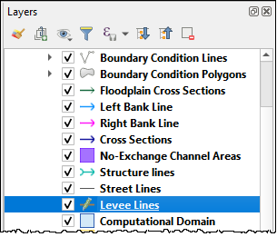
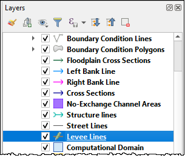

Levee Tool Walls#
Create Walls Shapefile#
Digitize a wall shapefile to represent the walls that will make a significant impact to the flooding in an urban development. This means representing wall that may prevent flooding in a neighborhood or walls that may cause flooding by trapping water. The depth and velocity vector maps can help identify walls that are hydraulically significant.
Shapefile Properties#
Walls that have the potential for failure due to collapse should also be identified. The shapefile must have polyline geometry and should have the following attributes:
Name – Feature name (string). The Name field is required by the dialog box but the values can be null.
Elevation – Crest elevation (ft or m) (real). For walls, this is the top elevation of the wall. This field is required but can be NULL. If NULL, the wall elevation is calculated from the correction field and described in correction as an elevation.
Correction – Elevation correction (ft or m) (real) Null correction is OK.
The correction field is ignored if it is NULL. If Elevation is not NULL and Correction is positive, it will be added to the elevation of the wall.
If Elevation is not NULL and Correction is negative, it will be subtracted from the elevation of the wall.
If Elevation is NULL and Correction is filled, the Correction is used as a wall height and is applied to a wall elevation calculation using the grid max grid element + the wall height.
Fail elevation or fail depth (ft or m) (real) (NULL ok) If a fail elevation is used, it will be applied uniformly to each levee cell along the wall. If a depth is used instead of an elevation, the plugin will calculate the fail elevation by adding the fail depth to the highest grid elevation across the wall.
Duration (hrs) (real) (NULL ok) If Duration is not NULL or 0, the duration (hr) that the levee will fail after the FAILEVEL is exceeded by the calculated water surface elevation.
Maximum fail width (ft or m) (real) (NULL ok) The maximum width to which the levee will fail. This variable is not used for walls and should be 0.
Vertical fail rate (ft/hr or m/hr) (real) (NULL ok) The rate of vertical levee or dam failure. Set 0 for wall collapse.
Horizontal fail rate (ft/hr or m/hr) (real) (NULL ok) The rate at which the levee breach widens. Set 0 for wall collapse.
In the case of walls, the failure data is usually set to default = 0 because they collapse when the fail depth or fail elevation is achieved. For walls, the only required failure data is the failure elevation or failure depth. All other failure values can be zero. It is not necessary to use failure data for every wall feature. If the failure elevation or failure depth is NULL, the failure for that wall will be ignored.
Add Walls to Levee Lines#
Move the Walls shapefile to the top of the User Layers group.
Click the Levee Tool and click the Add walls to User Levee Lines.


Fill the Walls dialog box and click with the appropriate layers and click Add Walls to User Levee Lines.
If other levees already exist, check the Add these walls to current User Levee Lines layer.

If the walls are added to the layer successfully, the following image will appear.

Go to Levee from Levee User Lines above to complete the walls by schematizing them.
Troubleshooting#
Duplicate levees are features that can cause errors in FLO-2D. The Levee Tool will analyze duplicate levees and remove the levee with the lowest crest elevation. This process is automatic. The duplicate levee data is saved to the Layers List so it can be analyzed for potential modifications. The Plugin should remove duplicate levees automatically.
Crest elevation is another potential source for a fatal error for FLO-2D. If a levee or wall crest is lower than an adjacent grid elevation, the FLO-2D engine will stop with a fatal error message and the erroneous elevations are reported to the error.chk file. The Plugin can validate elevations using the debug options. See Debug section for instructions.
If the Walls layer is not in the User Layers, the following error will appear. Move the Walls Layer into User Layers and try again.

If the project is old, it will be necessary to import the old gpkg into a new gpkg. This error will appear.
If a levee line is exactly aligned with a grid element side or corner, the following error will appear. Bear in mind that the On line 1675 may change with new versions of the Plugin.
For large projects, it can be difficult to find all these locations. It is easier to move all the levee lines 1ft or less to any orthogonal direction. In this example the shift is made 0.5 ft to the southeast.
Click the Levee Lines and click the Editor Pencil.
 

Use the Select Features Tool to select all User Levee Line features.

Use the Advanced Digitizing Toolbar to Move all features. Click the Move Features tool.
Zoom in on one vertex of any Levee Line feature. Click the vertex. Click Yes to acknowledge that all features will be moved.

Move the mouse slightly to the southeast and click again. Save the edits and run the Schematize Levees again.